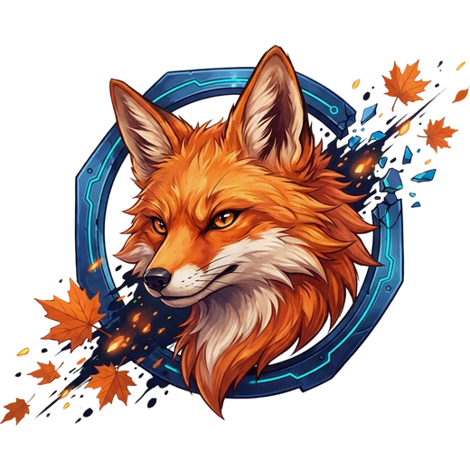
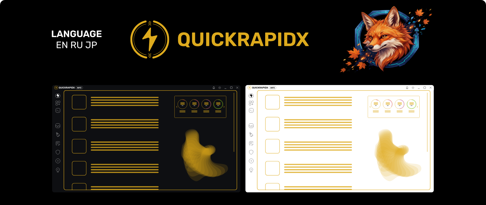

QUICKRAPIDX
Органайзер для тех, у кого на машине не десять программ, а полторы сотни. Наборы, осмотр машины, изоляция, корзина и уборка Windows — в одном окне, без похода в реестр и пять вложенных панелей.

Что это такое
Настольная утилита для Windows. Не лаунчер, не чистильщик и не «ускоритель» — а место, где программы держат в порядке и откуда ими управляют.
Проблема
Программ на машине набирается сотня с лишним. Половина не значится в панели управления. После переустановки Windows всё это собирают обратно по памяти и по списку в блокноте — вечер работы.
Что делает QuickRapidX
Находит установленное четырьмя способами сразу, собирает нужное в наборы,
запускает по одному нажатию, а то, что стоит держать подальше, — с урезанными
правами. И прибирает за системой: корзина, хранилище компонентов,
Windows.old.

Что уже работает
Честно: ниже только то, что есть в нынешней сборке и чем можно пользоваться сегодня. Задуманное, но не сделанное — отдельным разделом ниже.
Наборы
Программы, папки и ссылки в одном списке. Открывается значком в трее или ярлыком с рабочего стола, вырастает от того края экрана, где стоит панель задач, и закрывается само.
- вкладываются друг в друга, как папки
- свой значок, подпись и подсказка у каждой записи
- порядок — перетаскиванием, раскладка строкой или столбцом
- запись вытаскивается прямо на панель задач
Найденное на машине
Осмотр идёт по четырём источникам сразу, и каждый находит своё:
- реестр удаления — то, что поставил установщик
- пакеты Microsoft Store
- средства разработки из
PATH - обход дисков — портативное, о чём не знает никто
Кнопка запуска выбирает настоящий исполняемый файл, а не деинсталлятор и не значок.
Хранилище
Объявите папку Местом — и складывайте туда установщики и портативные сборки. Место переносится на другой диск целиком или уезжает на съёмном носителе к другой машине.
Изоляция ПРОБНАЯ
Запуск программы с урезанными правами: свой профиль, своя папка данных, свои разрешения. Три среды на выбор.
- своя, на AppContainer — ставить ничего не нужно
- песочница Windows — программа включит компонент сама
- Sandboxie, если он уже есть
Права выбираются ролью или по одному. Со средой можно снять снимок перед сомнительной установкой и откатиться.
Корзина
Отдельный значок в трее с пятью ступенями наполнения и своими картинками под каждую.
- предел размера — по каждому диску отдельно
- долей от объёма диска или своим числом
- подтверждение, звук и окно хода — родные, от оболочки
Восстановление Windows
- проверка и починка хранилища компонентов через DISM
- переустановка песочницы, когда она не поднимается
- удаление
Windows.old— вместе с тем, что обычному удалению не поддаётся
Ни одна задача не открывает чёрное окно консоли: ход виден в самой программе.
Каталог
Своя запись о программе: название, ссылка, идентификатор winget, значок и описание — разложенные по ролям.
Мелочи, которые заметны
- три языка, и при первом запуске берётся системный
- две темы — каждая своя, а не вывернутая наизнанку
- панель трея: корзина, наборы, машина, питание
- крестик прячет в трей, удержание закрывает совсем
Как устроено
Не электронное приложение на пол-гигабайта. Интерфейс рисует встроенный в Windows движок, а всё, что касается системы, делает ядро на Rust — напрямую, без прослоек.
Ядро · Rust
СИСТЕМА
Реестр, AppContainer, права на файлы, извлечение значков, опрос корзины,
владение файлами при удалении Windows.old. Разговор с оболочкой
Windows идёт вызовами, а не запуском консольных утилит.
Интерфейс · SvelteKit 2 и Svelte 5
ОКНАТри окна со своими маршрутами: главное, панель трея и окно набора. Все три без системной рамки — фон, границу и скругление рисует само приложение.
Оболочка · Tauri 2
СВЯЗЬМост между ядром и интерфейсом, сборка установщиков и права, выданные окнам поимённо.
Пара решений, которыми стоит похвастаться
| Решение | Зачем |
|---|---|
| Спящие окна | Скрытое окно усыпляется, а не висит в памяти. Рабочий набор приложения упал с 694 МБ до 86 МБ. |
| Своё хранилище значков | Значки лежат одним файлом с дописыванием в конец и уходят в интерфейс своей схемой uri — а не картинкой в разметке и не деревом из папок. |
| Ни одной консоли | Долгие задачи идут скрыто, а ход работы приходит событиями в само окно. Чёрный терминал поверх программы — не способ разговаривать с человеком. |
| Весь текст в словаре | Больше семисот строк в трёх языках. Забытый ключ падает на проверке типов, а не превращается в пустое место на экране. |
bun install · bun run tauri dev · bun run tauri buildНужны Bun, Rust и то, что требует Tauri. Подробности — в описании устройства.
Что дальше
Разделы уже стоят в меню программы и помечены как незаконченные — чтобы было видно, куда она движется.
Сейчас
Наборы, осмотр машины, хранилище, изоляция, корзина, восстановление, каталог.
Автоматизация
Сценарии для повторяющихся задач: свой конструктор или собственный код.
Информация о системе и статистика дисков
Подробности об оборудовании, состоянии дисков и разделов.
Очистка и реестр
Уборка накопившегося и понятный доступ к настройкам системы.
Защита и подсветка
Дополнительный уровень защиты и управление RGB-подсветкой устройств.
Скачать
Windows 10 или 11. Установщик ставится в профиль пользователя — прав администратора для установки не нужно.